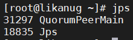
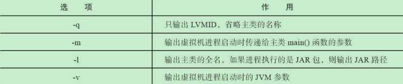
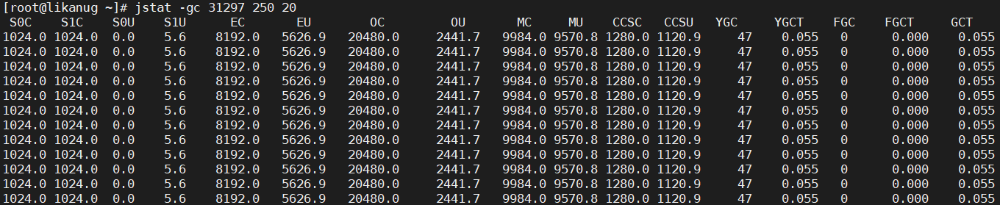
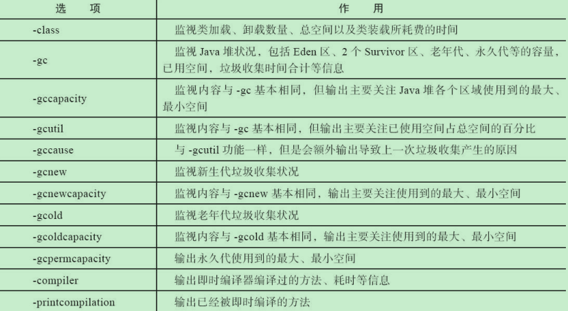
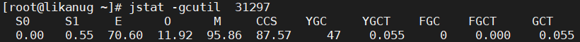
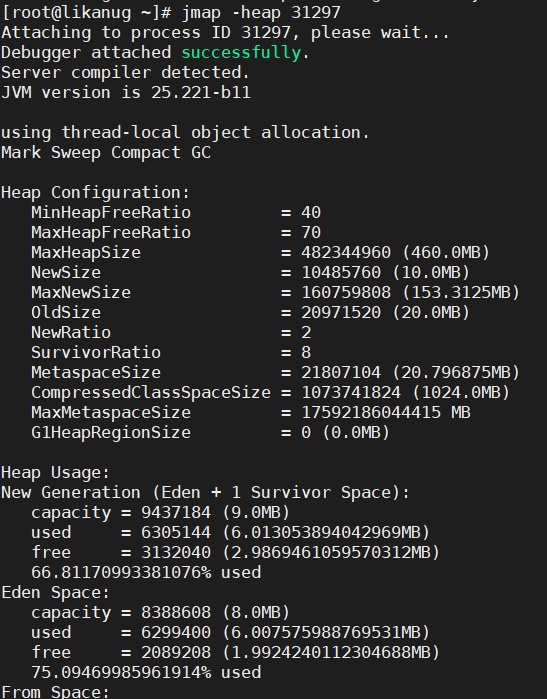
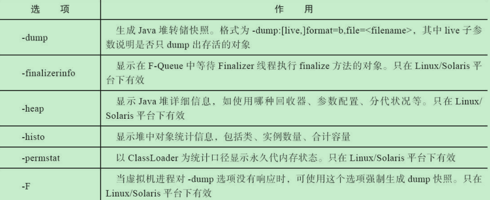
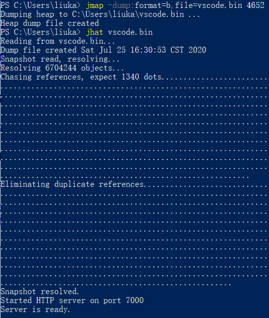
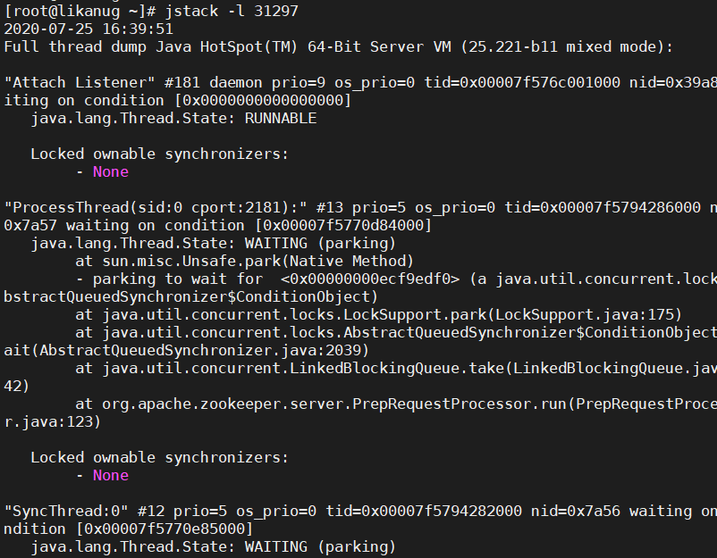
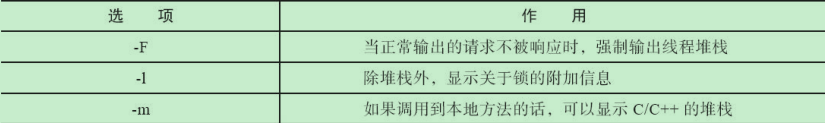

Java虚拟机性能监控、故障处理工具
基础故障处理工具
jps
作用：可以列出正在运行的虚拟机进程，并显示虚拟机执行主类(main()函数所在的类)名称以及这些进程的本地虚拟机唯一ID(LVMID)。

jps的主要参数

jstat
作用：是用于监视虚拟机各种运行状态信息的命令行工具。它可以显示本地或者远程虚拟机进程中的类加载、内存、垃圾收集、即时编译等运行时数据。

jstat -gc 31297 250 20表示查看jps为31297的进程的gc情况，250和20分别表示每250ms查询一次，和查20次，如果后面两个参数没有则只查一次。
jstat的选项参数


上图各个参数如下：原文看jstat
S0C: Current survivor space 0 capacity (kB).S0空间容量
S1C: Current survivor space 1 capacity (kB).S1空间容量
S0U: Survivor space 0 utilization (kB).S0使用率
S1U: Survivor space 1 utilization (kB).S1使用率
EC: Current eden space capacity (kB).当前Eden空间容量
EU: Eden space utilization (kB).Eden区使用率
OC: Current old space capacity (kB).当前老年区空间容量
OU: Old space utilization (kB).老年区空间使用率
MC: Metaspace capacity (kB).元数据区容量
MU: Metacspace utilization (kB).元数据区使用率
CCSC: Compressed class space capacity (kB).压缩类容量
CCSU: Compressed class space used (kB).压缩类使用量
YGC: Number of young generation garbage collection events.YGC发生次数
YGCT: Young generation garbage collection time.YGC时间
FGC: Number of full GC events.FGC发生次数
FGCT: Full garbage collection time.FGC时间
GCT: Total garbage collection time.GC的总时间
jinfo
作用：实时查看和调整虚拟机各项参数。

jmap
作用：用于生成生成堆转储快照

参数选项如下

jhat
与jmap搭配使用，用来分析jmap生成的堆转储快照

生成结果在http://localhost:7000 打开
jstack
作用：用于生成虚拟机当前时刻的线程快照，线程快照就是当前虚拟机内一条线程正在执行的方法堆栈的集合

参数选项
